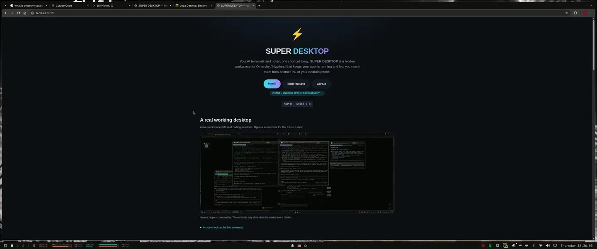
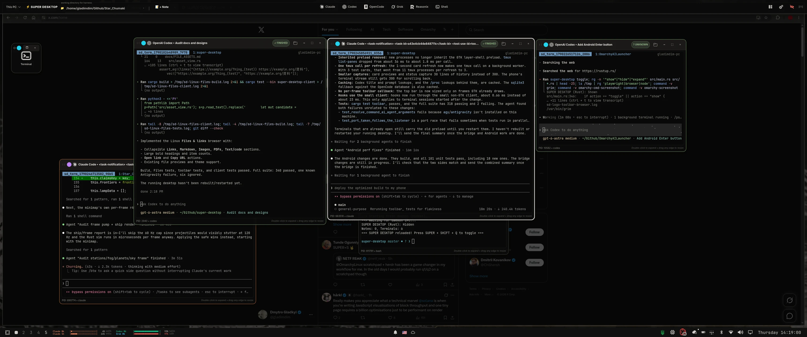
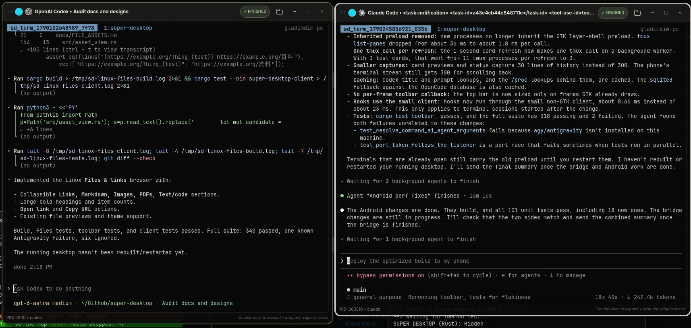
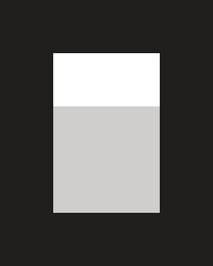

A real working desktop
Chrome stays underneath. One shortcut brings your live AI workspace into view.

{kind=link}
View the desktop screenshots
{kind=link}

{kind=link}

Install
Run these commands in a terminal on your Omarchy / Hyprland machine.
./install.sh. Install a Rust toolchain with Cargo using rustup. If rustup is already installed without a toolchain, run rustup default stable. Open a new terminal and check that both commands below succeed.rustc --version
cargo --versionThen clone and install SUPER DESKTOP. The script builds from source, so the first build can take a few minutes.
git clone https://github.com/gladimdim/super-desktop.git ~/GitHub/super-desktop
cd ~/GitHub/super-desktop
./install.shPress SUPER + SHIFT + Q to open your workspace.
Full prerequisites and troubleshooting: installation guide.
Main features
A second, invisible desktop on top of your Omarchy workspace. Press the shortcut — notes and AI terminals glide in. Press it again — your desktop is completely clean. Everything keeps running in the background.
📝 Sticky notes
Click and type. Notes follow your Omarchy theme, autosave, drag, resize, and take group color tags.
💻 AI terminals
Live mini-terminals running coding agents. Iconify to 128×128, ghost-resize, expand to 80% of the screen.
🪄 True overlay
Hidden means hidden — nothing occupies Hyprland workspaces. Slide-in animations plus background blur.
🎨 Native theming
Colors, fonts, and terminal palette come from the active Omarchy theme and sync instantly on switch.
🎯 Hot corner
Park the pointer in the top-left corner for two seconds and the overlay toggles — no keyboard needed.
⌨ Your own shortcut
SUPER + SHIFT + Q out of the box — click Record in ⚙ Settings, press any combination, and it becomes the key that toggles the overlay.
🖥️ Remote sessions
Pair another PC and its windows appear live in your overlay — same layout, same sessions, and you can type into them.
📱 Phone linking
Watch and control sessions from Android, use two panes on wide screens, and receive completion alerts for supported agents. iPhone and Android companion apps are in active development, with full foldable support planned across both platforms.
iPhone + Android. Built for foldables.
Both companion apps are in active development: bring your desktop AI sessions to iPhone and Android, with full foldable support for both platforms as part of that work.
Android already supports adaptive layouts and two terminal panes on wide screens. The iOS app is being developed toward the same experience: layouts that adapt as you fold, unfold, and resize, with independent terminals and drafts. iOS and its foldable support are in development, not yet released.
The Android companion is available today and continues to evolve. Follow development in the project repository.
Remote sessions — your other PCs live
Connect a second computer and its whole workspace opens inside your overlay. Every window becomes a live terminal, so you can watch and use that machine's sessions without getting up.
↔ Connect either way
Send a one-time connection link to another PC, or accept one from it. A single panel handles both directions, so either machine can be the one you look at.
🔐 You approve every PC
The same code appears on both screens and access is granted only after you confirm it on the computer being shared. Nothing connects behind your back.
🖥️ Their layout, your screen
Windows sit exactly where they do on the other computer — same sizes and stacking — laid out neatly to fit your display.
⌨ Type as if you were there
Click a window and start typing. Your keys, paste and Ctrl+C go straight to the session running on the other machine.
In three steps
- Share a connection link from one computer to the other.
- Check that the code matches on both screens and approve.
- The other PC's workspace opens and stays one click away.
Phone linking optional
Take your AI sessions with you. Pair an Android phone and it reaches your SUPER DESKTOP terminals over your own network, with everything kept private between your devices.
💻 Sessions in your pocket
See your running sessions on your phone and type into them, with the terminal's output and colours kept intact.
🔔 Know when it's done
Opt into completion alerts for supported Codex and Pi sessions. Delivery depends on your connection and Android background settings.
🖼️ Send a picture
Attach an image and send it with a prompt to an idle Codex session.
⌨ Remote keys & saved drafts
Send Enter, arrows, Tab, paging keys, and Ctrl-C without sending your draft. Unsent text is saved separately for each session.
📂 Files & Links
Browse referenced images, PDFs, Markdown, and code, or open and copy links from the terminal output.
🔒 Pair once, revoke anytime
Pair by scanning a QR code and confirming the matching code on your desktop. Access can be taken away from any phone whenever you like.
Supported AI harnesses
Only harnesses actually installed on the machine are offered in the top bar.
 Claude Code
OpenAI Codex
Claude Code
OpenAI Codex

OpenCode Grok CLI Antigravity
Aider · Reasonix · Shell
Antigravity
Aider · Reasonix · Shell
Android completion alerts support Codex and Pi with the updated bridge and compatible sessions. Image prompts currently support idle Codex sessions. Other agents remain available for terminal viewing and input; history access depends on the agent’s terminal mode.
Keybindings
| SUPER + SHIFT + Q | Show / hide SUPER DESKTOP — works in EN + UK layouts, and any other combination can be recorded in ⚙ Settings → Show / hide shortcut |
| Esc | Hide the overlay |
| Pointer in the top-left corner (2s) | Show / hide SUPER DESKTOP |
| Ctrl + N / Ctrl + T | New note / new terminal |
| Double-click terminal | Expand to 80% / collapse back |
Useful commands
super-desktop toggle # show / hide
super-desktop status # visible? notes / terminals count
super-desktop add-note "Buy milk"
super-desktop add-term claude # + antigravity, codex, opencode, grok, reasonix, aider, shell
super-desktop reload-theme
./rebuild.sh # rebuild after updates (in repo dir)Learn more
📄 Full README
Every feature, keybinding and command in one place — README.
🔐 Security
How pairing, access control and sharing between devices work — SECURITY.md.
📎 File previews
Open images, GIFs, PDF pages, Markdown and code straight from a terminal — FILE_ASSETS.md.
🌙 Sleep lock
Keep your AI sessions reachable while your laptop is on charge, even with the lid closed.